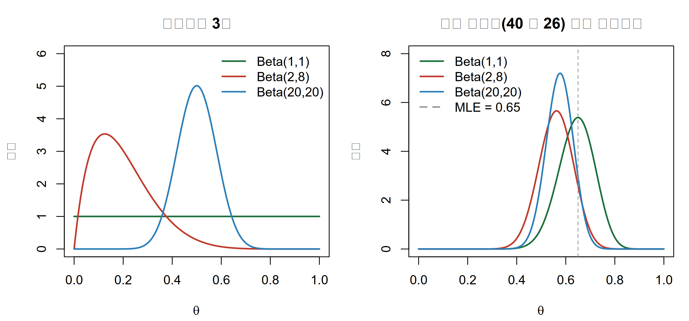
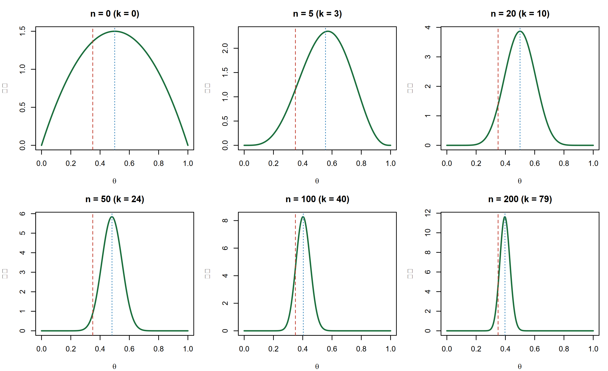

적분 없이 사후분포를 닫힌 형태로 얻는 켤레 구조를 Beta-Binomial, Gamma-Poisson, Normal-Normal로 익히고 base R로 직접 구현합니다.
Author
Eunji Ha
Published
September 21, 2026
학습 목표
켤레사전분포가 왜 정규화상수 적분을 피하게 해 주는지 설명할 수 있다.
Beta-Binomial, Gamma-Poisson, Normal-Normal 세 쌍의 사후 갱신 공식을 적용할 수 있다.
사후평균이 사전평균과 최대가능도추정치의 가중평균임을 수식과 그림으로 설명할 수 있다.
update_beta(), update_gamma(), update_normal()을 base R로 직접 구현할 수 있다.
켤레 결과를 격자 수치적분으로 교차검증하고, 켤레의 한계를 말할 수 있다.
들어가며: 적분이 가로막을 때
대립유전자 특이적 발현(allele-specific expression, ASE)을 본다고 합시다. 한 이형접합 부위에 정렬된 read가 40개이고 그중 26개가 대립유전자 A에서 왔습니다. A의 상대 빈도 \(\theta\)는 얼마일까요. 빈도주의라면 \(\hat\theta = 26/40 = 0.65\)로 끝나지만, 우리는 \(\theta\)에 대한 분포 전체를 원합니다.
베이즈 정리는 \(p(\theta \mid y) \propto p(y \mid \theta)\, p(\theta)\)까지는 쉽게 줍니다. 문제는 비례기호를 등호로 바꾸는 분모, 즉 주변가능도(marginal likelihood) \(p(y) = \int p(y \mid \theta) p(\theta)\, d\theta\)입니다. 모수가 하나면 수치적분으로 넘길 수 있지만 모수가 수십 개만 되어도 불가능해집니다. 그런데 사전분포를 가능도에 맞춰서 고르면 곱한 결과가 다시 같은 분포족의 형태가 되어, 정규화상수를 이미 아는 값으로 읽어낼 수 있습니다. 이 성질을 켤레(conjugate)라고 부릅니다.
핵심 직관
켤레란 사전분포와 사후분포가 같은 분포족에 속하도록 사전을 고른 것입니다. 그러면 갱신은 적분이 아니라 모수 몇 개의 덧셈으로 끝납니다. 데이터는 분포의 모양을 바꾸는 것이 아니라 분포의 모수를 옮길 뿐입니다.
Beta-Binomial: 비율을 다룰 때
ASE, 대립유전자 빈도(allele frequency), 메틸화 비율처럼 “n번 중 k번” 형태의 데이터는 이항분포로 씁니다. 여기에 맞는 켤레 사전은 \([0,1]\) 위의 Beta 분포입니다.
작은 수치 예부터 봅시다. 사전을 Beta(2, 2)로 두고 read 10개 중 7개가 A였다면 사후는 Beta(2+7, 2+3) = Beta(9, 5)이고, 갱신에 필요한 것은 덧셈 두 번뿐입니다. 사전 모수를 읽는 좋은 방법도 있습니다. Beta(a, b)는 이미 a번 성공하고 b번 실패한 것을 본 셈 치자는 뜻이며, 이를 가상 관측 횟수(pseudo-count)라고 부릅니다. Beta(1,1)은 성공 1회 실패 1회에 해당하는 균등분포이고, Beta(20,20)은 이미 40번을 관측해 0.5 근처라고 믿는다는 뜻이라 데이터 40개로도 쉽게 흔들리지 않습니다.
\(a, b\)는 사전 모수, \(n\)은 시행 수, \(k\)는 성공 수입니다. 정규화상수는 Beta 분포의 것이므로 따로 적분할 필요가 없습니다.
사후평균은 가중평균입니다
사후평균 \((a+k)/(a+b+n)\)은 사전평균과 최대가능도추정치(maximum likelihood estimate, MLE) \(k/n\)의 가중평균으로 다시 쓸 수 있습니다. 사전에 준 가상 관측 수 \(a+b\)가 실제 표본 크기 \(n\)과 경쟁하는 구조라서, \(n\)이 커지면 사전의 몫은 자연히 줄어듭니다.
\(w\)는 사전에 실리는 가중치입니다. \(n \to \infty\)이면 \(w \to 0\)이므로 사후평균은 MLE로 수렴합니다. 반대로 \(n\)이 작으면 사전이 결론을 좌우합니다.
흔한 오해
Beta(1,1)이 정보가 없는 사전이라고들 하지만 정보가 0인 것은 아닙니다. 성공 1회 실패 1회를 넣은 것과 같아서 \(k=0\)일 때도 사후평균이 0이 아니라 \(1/(n+2)\)가 됩니다. 사전이 무해한지는 항상 pseudo-count로 환산해 판단하십시오.
Gamma-Poisson: 카운트를 다룰 때
RNA-seq에서 한 유전자의 read count는 Poisson으로 시작하는 것이 자연스럽습니다. 평균 \(\lambda\)는 양수여야 하므로 사전은 양의 실수 위의 Gamma가 적합하고, 실제로 켤레입니다.
Gamma(a, b)에서 b를 rate(비율) 모수로 쓰면 평균은 \(a/b\)이고 여기서도 pseudo-count 해석이 됩니다. a는 가상으로 이미 센 read 수, b는 가상으로 이미 관측한 표본 수(또는 총 노출량) 입니다. 관측 \(y_1,\dots,y_n\)을 넣으면 a에는 총 카운트가, b에는 표본 수가 더해집니다.
표본마다 노출량(library size 등) \(e_i\)가 다르면 \(n\) 대신 \(\sum_i e_i\)가 들어갑니다. 사후평균은 \((a+\sum y_i)/(b+n)\)입니다.
Poisson은 평균과 분산이 같다고 가정하지만 실제 RNA-seq 카운트는 분산이 평균보다 큽니다. 이를 과산포(overdispersion)라고 합니다. 여기에 켤레 구조가 그대로 쓰입니다. 표본마다 \(\lambda_i \sim \mathrm{Gamma}\)를 뽑고 \(y_i \sim \mathrm{Poisson}(\lambda_i)\)로 두면, 감마를 적분해 없앤 주변분포가 정확히 음이항분포(negative binomial)가 됩니다. edgeR, DESeq2가 음이항을 쓰는 이유가 이 감마 혼합(gamma mixture)입니다.
Normal-Normal: 정밀도로 보면 깔끔합니다
분산 \(\sigma^2\)를 안다고 가정한 정규 관측에 정규 사전을 쓰면 사후도 정규입니다. 이때 평균과 분산 대신 정밀도(precision)\(=1/\text{분산}\)으로 쓰면 식이 눈에 들어옵니다. 정밀도는 그대로 더해지고, 사후평균은 정밀도를 가중치로 쓴 가중평균입니다.
수식으로 보기
사전 \(\mu \sim \mathcal{N}(\mu_0, \tau_0^2)\), 관측 \(y_i \sim \mathcal{N}(\mu, \sigma^2)\) (\(\sigma^2\) 기지)에서 사전 정밀도 \(\kappa_0 = 1/\tau_0^2\), 데이터 정밀도 \(\kappa_n = n/\sigma^2\)라고 두면
정밀도는 단순히 더해지고, 평균은 정밀도로 가중평균됩니다. \(\kappa_0 \to 0\)이면 사후평균은 \(\bar{y}\), 즉 MLE가 됩니다.
순차 업데이트: 오늘의 사후가 내일의 사전
켤레 구조의 실용적 장점은 갱신이 누적된다는 점입니다. read 40개를 한 번에 넣든 10개씩 네 번 나눠 넣든 마지막 사후는 같습니다. Beta(a,b)에 \(k\)와 \(n-k\)를 더하는 연산이 결합법칙을 만족하기 때문입니다. 데이터가 실시간으로 쌓이는 상황에서 과거 데이터를 다시 보관할 필요가 없습니다.
핵심 직관
사후분포는 지금까지 본 모든 정보의 요약입니다. 켤레 모형에서 그 요약은 모수 두세 개로 충분하고, 그래서 베이즈 갱신을 온라인 학습처럼 쓸 수 있습니다.
실습: base R로 직접 구현
갱신 함수 세 개
# Beta-Binomial: 사전 Beta(a, b) + 이항 관측(n회 중 k회 성공)update_beta <-function(a, b, n, k) {stopifnot(a >0, b >0, k >=0, k <= n)list(a = a + k, b = b + n - k)}# Gamma-Poisson: 사전 Gamma(a, b=rate) + 카운트 벡터 y# exposure는 표본별 노출량(library size 등). 기본값은 모두 1.update_gamma <-function(a, b, y, exposure =rep(1, length(y))) {stopifnot(a >0, b >0, all(y >=0), length(exposure) ==length(y))list(a = a +sum(y), b = b +sum(exposure))}# Normal-Normal: 사전 N(mu0, tau0^2) + 관측 y (관측 표준편차 sigma는 기지)update_normal <-function(mu0, tau0, y, sigma) { prec_prior <-1/ tau0^2# 사전 정밀도 prec_data <-length(y) / sigma^2# 데이터 정밀도 prec_post <- prec_prior + prec_data mu_post <- (prec_prior * mu0 + prec_data *mean(y)) / prec_postlist(mu = mu_post, tau =sqrt(1/ prec_post), precision = prec_post)}# 동작 확인unlist(update_beta(2, 2, n =10, k =7))
a b
9 5
unlist(update_gamma(2, 0.5, y =c(9, 14, 11)))
a b
36.0 3.5
unlist(update_normal(0, 10, y =c(1.2, 0.8, 1.5), sigma =1))
mu tau precision
1.1627907 0.5763904 3.0100000
사전 3종이 같은 데이터를 만났을 때
가상의 ASE 데이터입니다. 한 이형접합 부위의 read 40개 중 26개가 대립유전자 A에서 왔다고 가정합니다.
n_reads <-40# 총 read 수 (가상의 데이터)k_alt <-26# 대립유전자 A read 수grid <-seq(0, 1, length.out =512)prior_set <-list("Beta(1,1)"=c(1, 1), "Beta(2,8)"=c(2, 8), "Beta(20,20)"=c(20, 20))cols <-c("#1a6e3c", "#c0392b", "#2c7fb8")par(mfrow =c(1, 2), mar =c(4.2, 4.2, 3, 1))# 왼쪽: 사전분포 세 종류plot(grid, dbeta(grid, 1, 1), type ="n", ylim =c(0, 6),main ="사전분포 3종", xlab =expression(theta), ylab ="밀도")for (i inseq_along(prior_set)) { ab <- prior_set[[i]]lines(grid, dbeta(grid, ab[1], ab[2]), col = cols[i], lwd =2)}legend("topright", legend =names(prior_set), col = cols, lwd =2, bty ="n")# 오른쪽: 같은 데이터를 준 뒤의 사후분포plot(grid, dbeta(grid, 1, 1), type ="n", ylim =c(0, 8),main ="같은 데이터(40 중 26) 뒤의 사후분포",xlab =expression(theta), ylab ="밀도")for (i inseq_along(prior_set)) { ab <- prior_set[[i]] post <-update_beta(ab[1], ab[2], n_reads, k_alt)lines(grid, dbeta(grid, post$a, post$b), col = cols[i], lwd =2)}abline(v = k_alt / n_reads, col ="grey60", lty =2)legend("topleft", legend =c(names(prior_set), "MLE = 0.65"),col =c(cols, "grey60"), lwd =2, lty =c(1, 1, 1, 2), bty ="n")

사후평균은 Beta(2,8)에서 0.560, Beta(20,20)에서 0.575로 둘 다 MLE 0.65보다 왼쪽에 있습니다. 가상 관측 수가 40으로 더 큰 Beta(20,20) 쪽이 오히려 덜 당겨졌다는 점에 주목하십시오. 당김의 크기는 사전 가중치 \(w=(a+b)/(a+b+n)\)과 사전평균과 MLE의 거리 \(|a/(a+b) - k/n|\)의 곱으로 정해지기 때문입니다. Beta(2,8)은 \(w=10/50=0.2\)에 거리 \(|0.2-0.65|=0.45\)라 당김이 \(0.2\times0.45=0.090\)이고, Beta(20,20)은 \(w=40/80=0.5\)로 두 배 반이지만 거리가 \(|0.5-0.65|=0.15\)뿐이라 당김이 \(0.5\times0.15=0.075\)에 그칩니다. 가상 관측 수가 크다고 항상 더 당기는 것이 아니라, 사전이 데이터와 얼마나 다른 곳을 가리키는지를 함께 봐야 합니다.
사전평균과 MLE의 가중평균 확인
# 사후평균을 직접 계산한 값과 가중평균 공식으로 구한 값이 같은지 확인합니다.check_weighted_mean <-function(a, b, n, k) { post <-update_beta(a, b, n, k) w <- (a + b) / (a + b + n)c(direct = post$a / (post$a + post$b),mixed = w * (a / (a + b)) + (1- w) * (k / n), prior_weight = w)}round(rbind("Beta(2,8)"=check_weighted_mean(2, 8, n_reads, k_alt),"Beta(20,20)"=check_weighted_mean(20, 20, n_reads, k_alt)), 4)
set.seed(42)true_theta <-0.35# 가상의 참값obs <-rbinom(200, size =1, prob = true_theta) # read 단위 0/1 관측prior_a <-2; prior_b <-2steps <-c(0, 5, 20, 50, 100, 200)par(mfrow =c(2, 3), mar =c(4, 4, 3, 1))for (m in steps) { k_m <-if (m ==0) 0elsesum(obs[1:m]) post <-update_beta(prior_a, prior_b, n = m, k = k_m)plot(grid, dbeta(grid, post$a, post$b), type ="l", col ="#1a6e3c", lwd =2,main =paste0("n = ", m, " (k = ", k_m, ")"),xlab =expression(theta), ylab ="밀도")abline(v = true_theta, col ="#c0392b", lty =2) # 참값abline(v = post$a / (post$a + post$b), col ="#2c7fb8", lty =3) # 사후평균}

빨간 점선이 참값, 파란 점선이 사후평균입니다. n이 0일 때는 사전 그 자체이고, n이 커질수록 분포가 좁아지며 사후평균이 참값으로 다가갑니다. 같은 데이터를 한 번에 넣은 결과와 나눠 넣은 결과가 같은지도 확인합니다.
one_shot <-update_beta(prior_a, prior_b, n =200, k =sum(obs)) # 200개를 한 번에cur <-list(a = prior_a, b = prior_b) # 50개씩 네 번for (blk insplit(obs, rep(1:4, each =50))) { cur <-update_beta(cur$a, cur$b, n =length(blk), k =sum(blk))}rbind(one_shot =unlist(one_shot), sequential =unlist(cur))
a b
one_shot 81 123
sequential 81 123
Gamma-Poisson: 유전자 read count
가상의 유전자 하나에 대해 표본 6개의 read count를 만들고 사후평균과 95% 신용구간을 구합니다.
set.seed(42)y_counts <-rpois(6, lambda =12) # 가상의 read count 6개y_counts
n=5에서는 균등 사전이 0.89 수준의 확신을 주는 반면 Beta(20,20)은 0.67에 머물러 결론이 갈립니다. 같은 비율이라도 n=40이 되면 두 사전의 답이 모두 높아지고 차이도 줄어듭니다. 소표본에서는 사전 선택을 반드시 민감도 분석으로 함께 보고해야 합니다.
문제 2. Gamma-Poisson 사후 신용구간
가상의 유전자에서 표본 4개의 read count가 3, 5, 2, 6이었습니다. 사전을 Gamma(1, 0.1)로 두고 사후평균, 사후 최빈값, 95% 신용구간(등꼬리)을 구하고 \(P(\lambda > 5 \mid y)\)도 계산하십시오.
사전 모수는 pseudo-count로 읽는 것이 가장 실용적입니다. 사전이 데이터 몇 개에 해당하는지 항상 환산해 보십시오.
사후평균은 사전평균과 MLE의 가중평균이며, 표본이 커질수록 데이터가 지배합니다.
순차 업데이트가 성립하므로 데이터를 한 번에 넣든 나눠 넣든 같은 사후가 나옵니다.
켤레는 단순한 모형에서만 가능하고, 계층 모형이나 회귀로 가면 곧 깨집니다.
다음 시간
W3에서는 사전분포 자체를 어떻게 고를지 다룹니다. 약한 정보 사전(weakly informative prior), 무정보 사전의 함정, 사전 예측 점검(prior predictive check)으로 사전이 말이 되는지 확인하는 방법을 봅니다. 이어서 W4에서는 켤레가 깨졌을 때 사후를 수치적으로 근사하는 방법(격자, 라플라스, 기각·중요도 표집)을 다루고, W5에서 Metropolis-Hastings와 Gibbs 표집을 직접 구현합니다.